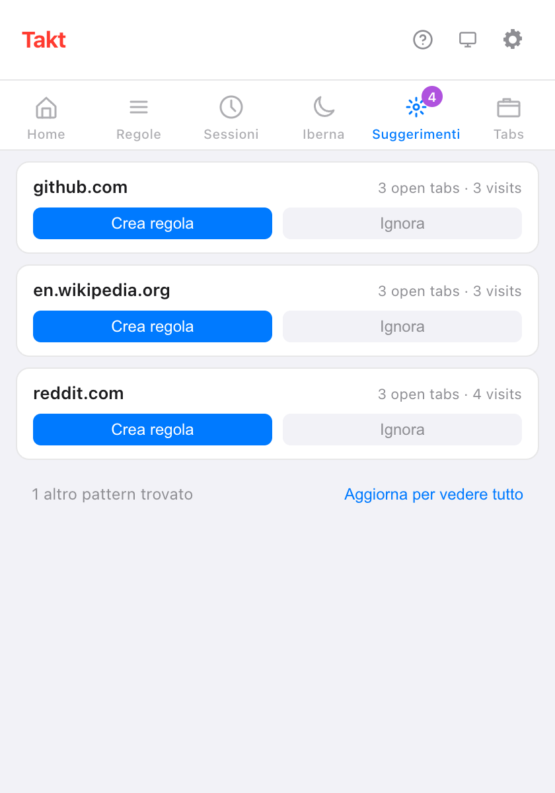

In breve: apri il riquadro Suggerimenti del popup di Takt. Ogni scheda è un sito che usi spesso e che non ha ancora una regola. Fai clic su Crea regola, controlla con Anteprima schede corrispondenti e salva.
- I suggerimenti vengono dalle schede aperte e dalle visite recenti, contate sul tuo dispositivo.
- Suggerisci regole chiede all'IA locale di Chrome di raggruppare in regole i siti che hai aperti.
- Il Tester di regole e il conteggio delle corrispondenze mostrano se una regola fa quello che intendevi.
Da dove vengono i suggerimenti di regole?
Takt tiene d'occhio i siti che meritano chiaramente un gruppo. Le fonti sono tre:
| Fonte | Suggerisce un sito quando | Dove lo vedi | Piano |
|---|---|---|---|
| Schede aperte | 3 o più sue schede sono aperte o ibernate | Popup → Suggerimenti, Opzioni → Rules | Free: 3 schede di suggerimento alla volta |
| Visite recenti | L'hai aperto 5+ volte, o con visite distribuite su 2+ giorni, negli ultimi 7 giorni | Popup → Suggerimenti, Opzioni → Rules | Free: 3 schede di suggerimento alla volta |
| Suggerimenti IA | Fai clic su Suggerisci regole | Opzioni → Rules | Free, fino al limite di 5 regole |
Un sito già coperto da una regola esistente di tipo dominio o contiene non viene mai suggerito. Né qualcosa che hai ignorato.
Come funziona il riquadro Suggerimenti?
Ogni scheda di suggerimento mostra un sito e il motivo per cui è lì, per esempio "3 open tabs · 3 visits" (3 schede aperte, 3 visite). Due pulsanti:
- Crea regola apre l'editor di regole con il sito già compilato. Non viene salvato niente finché non fai clic su Save.
- Ignora nasconde la scheda di suggerimento. I suggerimenti ignorati restano elencati nella pagina Rules delle opzioni, dove puoi ripristinarli.
Con il piano gratuito vedi le prime 3 schede di suggerimento e una riga come "1 altro pattern trovato". Premium ($3/mese o $30/anno) le mostra tutte.

Cosa registra Takt per fare i suggerimenti?
Solo nomi di siti e conteggi. In modalità Per regole, quando una nuova scheda non corrisponde a nessuna regola, Takt aggiunge uno al conteggio delle visite di quel sito. Conserva:
- il dominio, un conteggio delle visite e la prima e l'ultima volta che l'ha visto;
- solo le voci degli ultimi 7 giorni, e al massimo 1.000 siti;
- niente dalle finestre in incognito.
Tutto è salvato nello spazio di archiviazione locale delle estensioni di Chrome e non lascia mai il browser. Clear tab pattern history in Settings lo cancella. Se concedi l'autorizzazione facoltativa alla cronologia di navigazione, i numeri di visite su ogni scheda di suggerimento vengono invece dalla cronologia di Chrome degli ultimi 90 giorni.
Cosa sono i suggerimenti di regole con IA?
Nella pagina Rules delle opzioni, Suggerisci regole invia l'elenco dei siti delle schede aperte alla Prompt API integrata in Chrome. Il modello gira sul tuo dispositivo, raggruppa i siti per tema e dà un nome a ogni gruppo. Riceve solo i nomi dei siti: nessun titolo, nessun contenuto delle pagine.
- Ogni suggerimento ha Aggiungi regola e Ignora. Aggiungi regola la salva subito, attiva.
- La prima esecuzione può richiedere un minuto mentre Chrome prepara il modello.
- Su un dispositivo che non può eseguire il modello, vedi "I suggerimenti IA non sono disponibili su questo dispositivo."
- Nel piano gratuito ricevi tanti suggerimenti quanti sono gli slot di regole gratuiti che ti restano, su 5.
Come testo una regola prima di fidarmi?
Due strumenti nella pagina Rules delle opzioni:
- Tester di regole. Incolla un URL e, se vuoi, il titolo di una pagina. Takt risponde "Matches: regola → gruppo" oppure "Nessuna regola corrispondente". Spunta Includi regole disabilitate per testare anche le regole che hai disattivato.
- Anteprima schede corrispondenti. Dentro l'editor di regole, elenca le schede aperte, in tutte le finestre, che le condizioni non ancora salvate prenderebbero. Se nessuna corrisponde, mostra "Nessuna scheda corrisponde a questa regola."

Come capisco se una regola funziona?
Ogni regola nell'elenco mostra quante schede ha messo nel suo gruppo. Una scheda conta quando la regola la sposta fuori dalle schede non raggruppate.
La vista Stats aggiunge i totali: schede organizzate, schede al giorno, la regola principale e le 10 regole più usate. Una regola ferma a zero per una settimana merita un controllo con il Tester di regole. Reimposta statistiche fa ripartire i conteggi da zero.
Posso creare una regola dalla pagina in cui mi trovo? Premium
Sì. Fai clic destro sulla pagina e scegli Crea regola da questa scheda. Takt apre l'editor di regole con un pattern glob come *://github.com/* già compilato. Controllalo e salva.
Cosa i suggerimenti non possono fare
- Lavorano sito per sito. Takt non suggerirà "tutte le pull request" su più repository. Per quello scrivi una regola glob o regex (Premium).
- I suggerimenti dalle schede aperte richiedono 3 schede dello stesso sito. Due schede non bastano.
- I suggerimenti IA dipendono dal modello locale di Chrome. I computer più vecchi o poco potenti potrebbero non riceverli.
- I suggerimenti servono la modalità Per regole. Se preferisci non scrivere regole affatto, prova il raggruppamento per categoria o con IA.
Apri le tue schede come sempre. Lascia che Takt ti dica quale regola scrivere.
Aggiungi Takt a Chrome, è gratisDomande frequenti
Come decide Takt quali regole suggerire?
Un sito entra in lista con 3 o più schede aperte, o con 5 visite (o visite su 2 giorni) negli ultimi 7 giorni, purché nessuna regola lo copra.
I suggerimenti di regole sono gratuiti?
Sì. Con il piano gratuito vedi 3 suggerimenti alla volta nel riquadro Suggerimenti e suggerimenti IA fino al limite di 5 regole. Premium ($3/mese o $30/anno) li mostra tutti.
I suggerimenti di regole con IA inviano le mie schede da qualche parte?
No. Al modello locale di Chrome vanno solo i nomi dei siti delle schede aperte. Vedi come Takt tiene i dati in locale.
Posso recuperare un suggerimento ignorato?
Sì. La pagina Rules delle opzioni elenca i suggerimenti ignorati e da lì puoi ripristinarli.